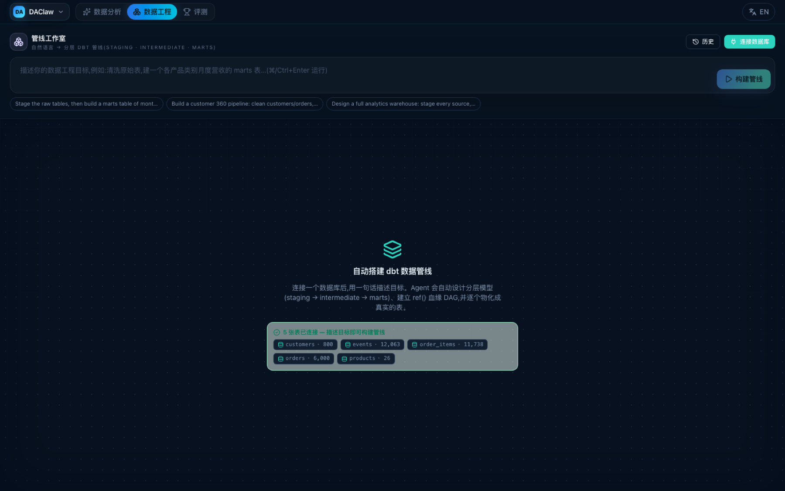
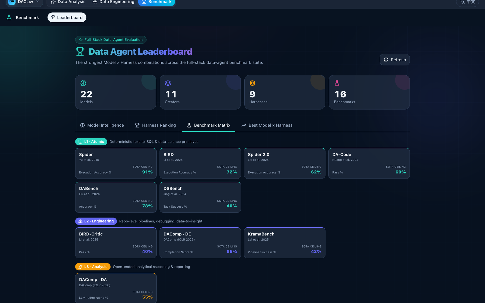

Connect & Ground
Attach tables and warehouses (Postgres, MySQL, DuckDB, SQLite, CSV/Parquet/Excel) plus a local corpus of PDF, DOCX, Markdown, JSON, and HTML. Every answer is grounded in read-only SQL and cited evidence.
DAClaw compiles one plain-language question into a typed, validated workflow — inspectable and approvable before a single query runs. It executes grounded analysis and delivers dashboards, native Excel models, dbt pipelines, and narrated data videos. One agent, the full data stack.

Linear chat hides the work. DAClaw runs a transparent loop — ground the truth, compile and validate the plan, then execute and deliver. Every step is inspectable, and nothing heavy runs until you approve it.
Attach tables and warehouses (Postgres, MySQL, DuckDB, SQLite, CSV/Parquet/Excel) plus a local corpus of PDF, DOCX, Markdown, JSON, and HTML. Every answer is grounded in read-only SQL and cited evidence.
One question compiles into a typed workflow DAG. DAClaw checks dependencies, cycles, and evidence, opens a node inspector on every step, asks a clarifying question when intent is ambiguous — then waits for Approve & Run.
Independent branches run in parallel, then converge into dashboards, reports, native Excel, dbt pipelines, and narrated data videos. Solve a hard task once and the agent saves a validated skill for next time.
DAClaw isn't one trick. It ships as three working surfaces that carry a question from raw table to peer-reviewed benchmark.
The agentic workbench. Connect data, ask in plain language, and one chat auto-decides when to run SQL, draw a chart, assemble a dashboard, write a report, build a workbook, or narrate a data video.

Auto-DBT. Describe a goal in one sentence and the agent designs layered dbt models —
staging → intermediate → marts — resolves ref()/source() into a lineage DAG,
and materializes each into a real table.

Proof and provenance. A Model × Harness leaderboard across the full-stack benchmark taxonomy, plus a data-synthesis workbench that fabricates training data and research tables — jsonl, csv, xlsx, parquet.
One question becomes a typed workflow DAG — validated for dependencies, cycles, and evidence, and shown before a single tool runs.
Approve & RunEvery chart and report number is bound to the exact SQL that produced it. Runs are replayable. No hallucinated figures.
Read-only SQLClick any step to see its inputs, the SQL executed, live status, and an output preview — full per-node transparency.
Per-nodeNatural language to layered dbt models with ref()/source() lineage, topologically run and materialized as real tables.
Build a computable DCF/LBO from real =formulas, recalculated offline to prove it computes — with a hardcoding detector and #DIV/0! repair.
Editable charts and multi-sheet dashboards written as real .xlsx — openpyxl workbooks with live chart XML, not screenshots.
Turn query-backed evidence into a cinematic, auto-advancing narrative with KPI scenes and per-scene voice-over — a data story that plays like a film.
Per-scene TTSSearch PDF, DOCX, Markdown, JSON, and HTML alongside structured data — fully local, so the corpus never leaves the machine.
Local-firstAfter solving a non-trivial task, DAClaw saves a reusable skill — kept only if it passes a quality gate — and reuses it next time.
Quality-gatedActual DAClaw interfaces — no concept renders.
Compile a data mission, review the typed workflow with its execution layers and parallel branches, then hit Approve & Run.
DAClaw is also a full-stack data-agent research platform. The same product surfaces feed an evaluation cockpit that scores every model × harness across the entire data-agent lifecycle — and routes what it learns back into the workflows, tools, and playbooks the agent uses.
The cinematic stage is wired. Add one file or URL in site-config.js and the placeholder becomes the player.
Flexible enough for exploration.
Strict enough for data.
DAClaw combines the adaptability of an agent with the contracts of a data system: typed nodes, read-only SQL, inspectable evidence, sandboxed sources, reusable skills — and an evaluation loop that keeps every claim honest.